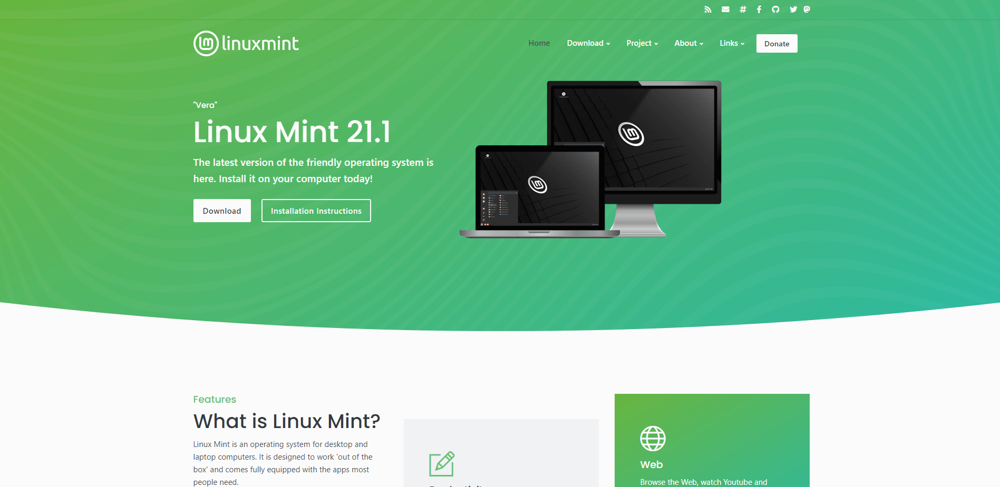
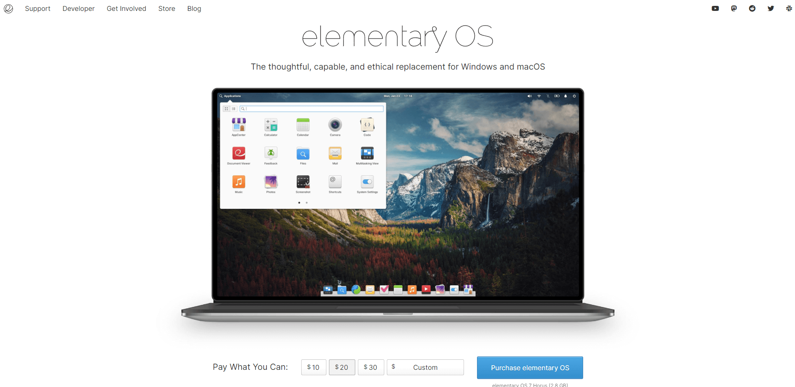
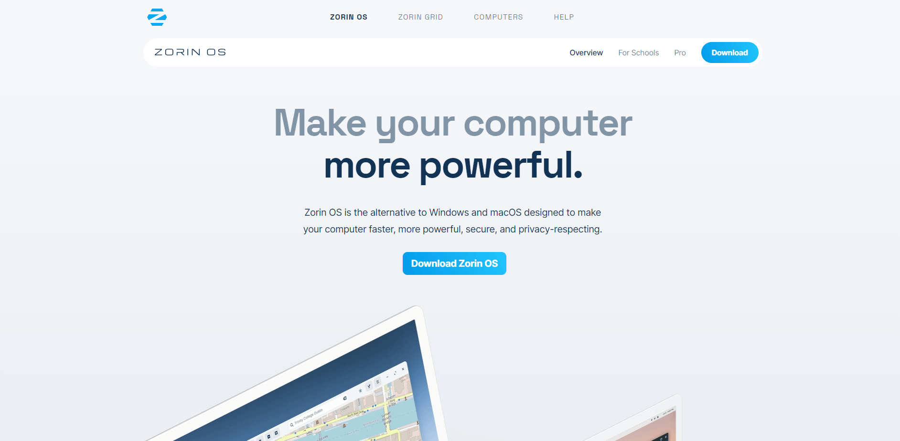

January 26, 2023
The Easiest Linux Distributions
Choosing the ideal Linux distribution for your needs can be challenging due to the hundreds of options available.
For example, some Linux distributions are made with beginners in mind, while others are built for advanced users. Also, some specialized Linux distributions are built for particular purposes.
Easiest to use Linux distributions
1. Linux Mint
Linux Mint is built on top of the Linux kernel with the GNU toolchain and is based on the Ubuntu and Debian projects. Its goal is to be a modern and efficient operating system so that any computer user can carry out their daily tasks.
It has a comfortable user interface and an interactive design, which makes it a good choice for new Linux users.
Also, Linux Mint is an open source distribution that supports x86 and x64 platforms. It is also designed to work with other operating systems, such as macOS and Windows. This means that users can configure it in a dual-boot or multi-boot environment during installation.
Linux Mint comes in three different versions for different preferences. Each features a different desktop environment:
• Cinnamon: the most innovative environment that includes a fully featured desktop.
• MATE: compatible with a variety of hardware specifications.
• Xfce: the lightest and most stable desktop environment.
However, Linux Mint requires a machine capable of running smoothly. Its minimum system requirements include 4 GB of RAM, 100 GB of disk space, and a screen resolution of 1024x768.
[ Donwload Here ]
2. Elementary OS
Known for its simple yet effective user interface powered by Pantheon, Elementary OS is an Ubuntu-based Linux distribution. It strives to be a capable and ethical replacement for Windows and macOS.
Elementary OS offers these notable interface features:
• Multitasking View: the workspace organizes work by tasks. It will display all open windows and workspaces so that users can switch between them.
• Picture-in-picture: keeps tabs on one side of the screen while users work on another.
• Do Not Disturb: this option turns off all notifications to help users focus.
This distribution incorporates the pay-what-you-can payment model. This means that you can download it for free or donate any amount of money to the developers.
However, this Linux distro has limited environment flexibility as you cannot customize it according to your preferences. For example, you cannot change the appearance of the desktop without installing a third-party application such as Elementary Tweaks or Pantheon Tweaks.
[ Donwload Here ]
3. Zorin OS
Zorin OS is an Ubuntu-based Linux distribution with GNOME 3 and Avant Window Navigator as the default desktop environment. It comes with Wine and PlayOnLinux applications that allow users to run Windows programs.
It is the best Linux distro for new users as they do not need to learn anything new to get started – it comes with a familiar interface. The available design environments are derived from popular operating systems, such as Windows and macOS.
Another cool feature available from this Linux distribution is Zorin Connect. It is an integrated tool that merges the functionality between your and an Android device.
Zorin OS comes in four editions with different features:
• Zorin Core: the free version includes the LibreOffice suite, advanced desktop options, Zorin Connect, and standard layouts.
• Zorin Education: supports educational apps to facilitate self-paced learning.
• Zorin Lite: The best option for old and low-end machines. It has a light desktop, the LibreOffice suite, and standard layout options. Also, it's free
• Zorin Pro a paid version comes with advanced features like premium desktop layouts, installation support, and enterprise-grade apps.
The free edition does not come with access to the most distinctive features like the premium desktop layouts. Therefore, you will have to pay for the Pro version starting at $39 per license to experience everything this Linux distro has to offer.
[ Donwload Here ]